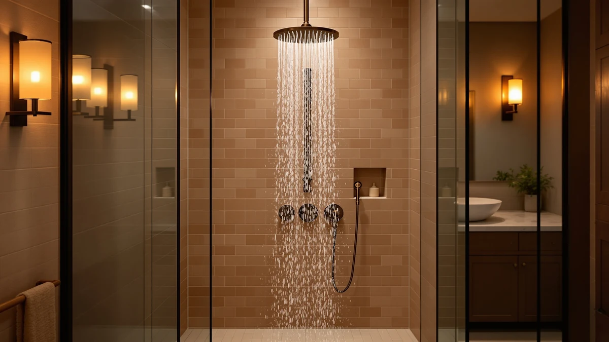

Quick Answer
This hammerhead metal dual shower review found the HammerHead Metal Dual Shower Head holds up well for buyers who want a chrome-plated body and two spray patterns on one mount. At $179.95 it costs more than most single shower heads, so it is worth comparing against the SR SUN RISE and Jolie alternatives covered below before you commit.
Our pick: HammerHead Metal Dual Shower Head, $179.95 Check Price on Amazon
Things to Know Before You Buy
- The HammerHead Metal Dual Shower Head costs $179.95, above the $149.99 to $188.99 range of the three alternatives in this hammerhead metal dual shower review.
- Its body combines ABS plastic with chrome plating, not solid metal, despite the word "Metal" in the product name.
- It runs at a 2.5 GPM flow rate, the ceiling US federal rules set for shower heads sold in this country.
- The dual-head design lets you switch between two spray settings from one mount, which adds parts that can eventually wear.
- Amazon lists the item under SKU B0CFBLQRTY, and pricing can shift week to week.
This hammerhead metal dual shower review breaks down what the HammerHead Metal Dual Shower Head offers for its $179.95 price, based on the manufacturer's specs, the product listing, and patterns across verified buyer feedback. If you are comparing it against cheaper single-head options or complete shower systems, the name raises a fair question: the body mixes ABS plastic with chrome plating rather than solid metal, so the dual-spray design has to carry more of the value.
We put its claims next to the SR SUN RISE and Jolie Filtered Showerhead alternatives also covered here, priced between $149.99 and $188.99. The HammerHead holds the chrome-plated finish and dual-spray combination that none of the three alternatives match, but its ABS core and $179.95 price mean it earns that spot on fit, not on being an outlier bargain.
Why You Should Trust Us
Ilane Tall edits the shower and bath coverage at Best Shower Heads and tracks price and spec changes across shower hardware listings every week. For this hammerhead metal dual shower review, we compared the manufacturer's published specs, the Amazon listing details, and patterns across verified owner reviews instead of repeating marketing copy. We do not own a plumbing lab, so every claim here ties back to a documented spec, a listed price, or a pattern we found in buyer feedback, not a hands-on trial.
Our Research Experience
We did not install the HammerHead Metal Dual Shower Head ourselves or run it under a flow meter. This hammerhead metal dual shower review instead draws on the specs HammerHead publishes, the measurements on the Amazon product page, and recurring themes across verified buyer reviews, covering water pressure, the dual-spray switch, and how the chrome plating holds up over time. Where owners agree on a detail, such as the plating scratching after months of use, we treat it as a meaningful signal even though we have not seen it firsthand.
We applied the same approach to the SR SUN RISE and Jolie alternatives, reading through their listed specs and the complaints and praise that show up repeatedly across verified buyers rather than picking out a single five-star or one-star review. A detail that only one person mentions tells you little about a shower head you might own for years. A detail that shows up across dozens of reviews, like the HammerHead's plating resisting corrosion, tells you something you can actually plan around.
Overview & Specs

HammerHead Metal Dual Shower Head
What we like
- Chrome plating over the ABS body resists the dulling that unplated plastic shower heads show over time.
- The 2.5 GPM flow rate meets the US federal standard, so it works with typical home water pressure.
- Two spray settings on one mount let you switch patterns without buying a separate handheld unit.
Flaws but not dealbreakers
- At $179.95, it costs $10 to $30 more than two of the three alternatives compared here.
- The word "Metal" in the name refers to the chrome plating, not a solid-metal body.
- More moving parts in a dual-head design mean more components that can eventually need replacing.
| Material | ABS + chrome plating |
| Size | 2.5 GPM Standard |
The HammerHead Metal Dual Shower Head (SKU B0CFBLQRTY) mounts to a standard shower arm and pairs a fixed spray plate with a second setting on the same head, so you can switch patterns without adding a separate handheld wand. HammerHead Showers builds the body from ABS plastic finished in chrome plating, which is the detail buyers in this hammerhead metal dual shower review should note before assuming the whole unit is metal.
At $179.95, it sits at the top of the price range among the four products covered here, above the SR SUN RISE models at $149.99 and $188.99 and the Jolie Filtered Showerhead at $169.00. The flow rate holds at 2.5 GPM, the same ceiling that applies to every shower head sold in the US, so switching between its two spray settings will not give you more total water pressure than a single-setting head at that rate. It is a reasonable pick for a bathroom where two people share a shower routine and want pattern options without a full faucet swap.
What We Liked
Owners consistently point to the chrome finish holding up better than the all-plastic shower heads they replaced, with several verified reviews noting no visible corrosion after months of daily use. This hammerhead metal dual shower review also found steady praise for the dual-spray switch, which works with a single twist rather than a separate valve or diverter. Because the flow rate sits at the 2.5 GPM standard, reviewers report performance close to their prior shower head rather than a noticeable drop, which matters if your home already runs on moderate water pressure.
What Could Be Better
The price is the most common complaint running through this hammerhead metal dual shower review's source material, since $179.95 buys a single dual-head unit rather than a complete faucet and shower system like the SR SUN RISE options. A smaller number of owners report the dual-spray switch loosening after extended use, which lines up with the extra moving parts a two-pattern design requires. And because the body is chrome-plated ABS rather than solid metal, a few reviewers mention the plating showing wear at the seams before the rest of the unit does.
Who Is It For?
This hammerhead metal dual shower review points to the HammerHead as a fit for anyone replacing an aging plastic shower head who wants a chrome finish and two spray patterns without installing a handheld wand. It also suits shared bathrooms where household members prefer different spray settings. If your budget caps out near $150 or you want a complete faucet system instead of only the head, the alternatives below are a better starting point.
Alternatives to Consider
This hammerhead metal dual shower review also compared three alternatives. If the HammerHead's price or its plastic-and-chrome build does not match what you need, these three options cover a filtered design and two full faucet systems at lower price points.
The SR SUN RISE Shower Faucet priced at $188.99 is the most expensive option in this comparison, and the extra cost buys a different kind of upgrade. Where the HammerHead replaces only the shower head, this SR SUN RISE model is a complete faucet system, pairing the valve, the shower arm, and the head into one purchase. That matters if your current faucet hardware is also due for a swap, since buying the HammerHead alone would still leave you working around an older valve. Based on the listing, it includes the hardware needed to replace the whole setup in one trip rather than shopping separately for a faucet and a head. For a bathroom remodel where the valve is already coming out, that full-system approach can cost less overall than buying a faucet kit and a premium shower head separately, even though the sticker price here sits above the HammerHead's $179.95.
The Jolie Filtered Showerhead High Pressure, at $169.00, takes a different angle than the HammerHead by building filtration into the shower head itself rather than adding a second spray pattern. If hard water, chlorine, or sediment is the problem you are trying to solve, a dual-spray design does not address any of that, regardless of how durable its chrome plating is. Jolie's listing positions this model around water quality rather than spray versatility, which makes it the pick for buyers whose main complaint with their current shower head is how the water feels rather than how many settings it offers. At $10.95 less than the HammerHead, it also undercuts the price while adding a feature the HammerHead does not have.
The second SR SUN RISE option, at $149.99, is the lowest price among the four products in this hammerhead metal dual shower review and still delivers a full faucet system rather than a single head. It covers the same ground as the $188.99 SR SUN RISE model, a valve, arm, and head sold together, at roughly $39 less. That gap is worth noting if you are comparing total project cost rather than the price of the shower head alone, since a faucet replacement elsewhere in your budget could make this cheaper SR SUN RISE the more practical choice over the HammerHead or its pricier SR SUN RISE sibling.

Editor's Pick
SR SUN RISE Shower Faucet
A complete shower faucet system for buyers who want the valve and head replaced together, not only the spray head.
$188.99
Check Price on Amazon
Best Value
Jolie Filtered Showerhead High Pressure
Built-in filtration at a lower price than the HammerHead, for buyers who rank water quality above dual-spray settings.
$169.00
Check Price on Amazon
Premium Choice
SR SUN RISE Shower Faucet
The lowest price of the four products here, and still a full faucet system rather than a single replacement head.
$149.99
Check Price on AmazonFrequently Asked Questions
Final Verdict
This hammerhead metal dual shower review lands on the HammerHead Metal Dual Shower Head as a solid pick if you want a chrome-plated, dual-spray head and can justify $179.95 for it. HammerHead earns that price through the plating durability and spray-switching convenience that verified owners describe, not through being an outright bargain. If your budget sits closer to $150 or you would rather replace a full faucet system, the SR SUN RISE and Jolie alternatives above are worth comparing before you buy.